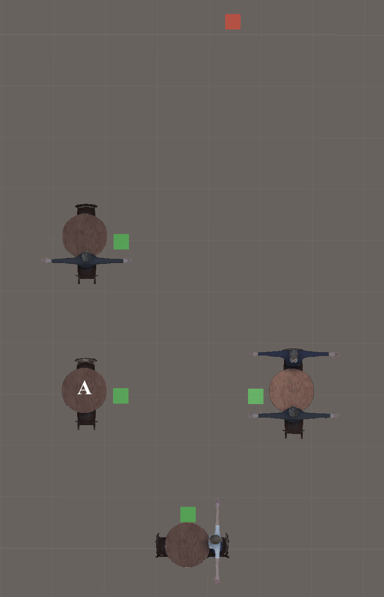

Below is an image of the restaraunt's table layout from above.
The server will always start at location *blue diamond*. Its goal could be any of *other location indicators* next to the six round tables.
You will be "sitting" in one of the three chairs at table *E*, so you may not be able to see the entirety of the restaraunt.
Remember, your task is to determine whether the server is approaching your table or a different table.
